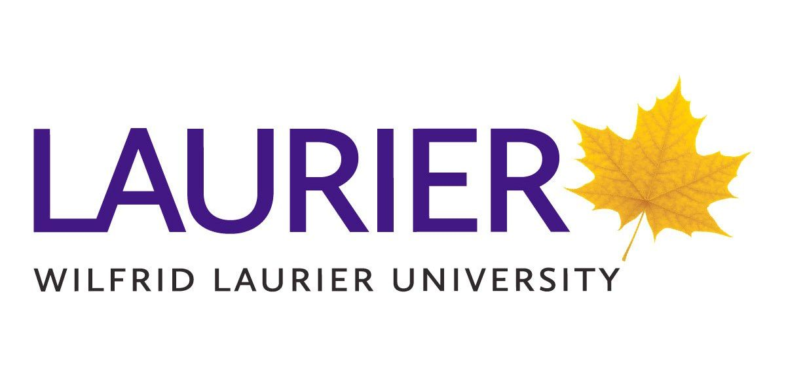

About Me
I have been in love with coding from a young age—my dad works in the field of computer science, and his passion for coding sparked my own.
Ever since, I’ve loved coding,
learning new technologies, and challenging myself with new projects. I specialize in Python, HTML, and CSS and I am also currently learning Java.
I’m currently looking for internship opportunities to showcase my skills and to gain real-world
experience and to grow as a developer.
I’m someone who values connection and curiosity. I’m always eager to learn from the people around me and embrace new experiences.
Whether it’s through participating in community events or taking on new projects, I strive to make the most of every opportunity to grow.
I’m a strong believer in teamwork and enjoy being part of a group where everyone contributes their unique perspectives.
Outside of coding, I enjoy staying active, exploring new hobbies, and making new friends—always with an open mind and a positive attitude.
Skills
Experience
Education
- Python
Python is my main language that I am learning. I’ve used it to build several projects,
from simple scripts to more complex applications.
Its readability and versatility have made it an essential part of my learning journey.
- HTML/CSS
I’ve used HTML and CSS to create websites both for personal projects and business purposes.
These tools have helped me design responsive and user-friendly websites, giving me a strong foundation in front-end development.
- SQL
I’ve used SQL in the past and have a solid understanding of it.
I’m comfortable working with databases, querying data, and managing information,
which has been valuable for projects that involve data-driven applications.
- Java
I'm currently learning Java, a versatile, object-oriented language used in web, mobile, and enterprise applications.
I'm gaining experience with its syntax, data structures, and object-oriented principles
to enhance my problem-solving skills.
- Problem-Solving & Algorithms
I enjoy solving algorithmic problems and continuously improving my problem-solving skills
through LeetCode challenges.
I have been practicing various problems on LeetCode,
gaining experience with data structures such as arrays, linked lists, and hash maps to build efficient and optimized solutions.
- First Year Representive
Laurier Computing Society - Jan 2025 - Present
As a First-Year Representative for the Laurier Computer Science Club, I have gained valuable experience in fostering a strong and inclusive tech community.
My role has allowed me to actively engage with fellow students, promote participation in events, and contribute to creating a welcoming space for learning and collaboration.
Through this position, I have developed leadership and communication skills by organizing initiatives, facilitating discussions,
and connecting with peers who share a passion for technology. My interest in AI development and cybersecurity has driven me to explore new opportunities within the club, helping to shape a dynamic environment where students can grow both technically and professionally.
This experience has reinforced my commitment to making a meaningful impact and supporting the next generation of tech enthusiasts.
- Personal Projects
I have created personal projects related to my interests and passion,
allowing me to apply my skills in real-world scenarios and continuously improve as a developer.
- Hackathons
With a deep passion for coding, I have actively participated in hackathons where
I collaborated with teams to develop innovative solutions within tight timeframes. These experiences have allowed me to apply my technical skills in real-world scenarios,
think creatively under pressure, and learn from diverse perspectives.
Hackathons have not only strengthened my problem-solving abilities but also enhanced my teamwork, communication, and adaptability in fast-paced environments.
- NoFrills
Jan 2022 - Present
Worked at No Frills, developing strong problem-solving and communication skills through customer service and teamwork.
Gained experience in efficiency, attention to detail, and adapting to fast-paced environments—skills
valuable in computer science and software development.
- Wilfrid Laurier University
I am a first-year Computer Science (BSc) student with a GPA of 3.5 at Wilfrid Laurier University.
As a full-time student, I am passionate about building a strong foundation in computer science, problem-solving, and coding.
Beyond academics, I’m an outgoing and curious individual who thrives in collaborative environments.
I enjoy engaging with peers, sharing knowledge, and participating in community-driven tech initiatives.
My goal is to continue growing both as a developer and a person, while exploring my interests in AI, cybersecurity, and software development.
